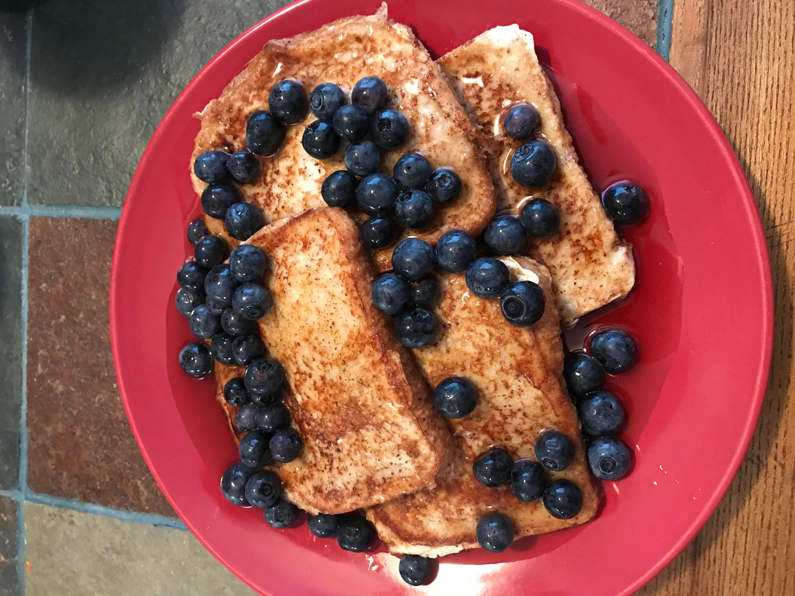
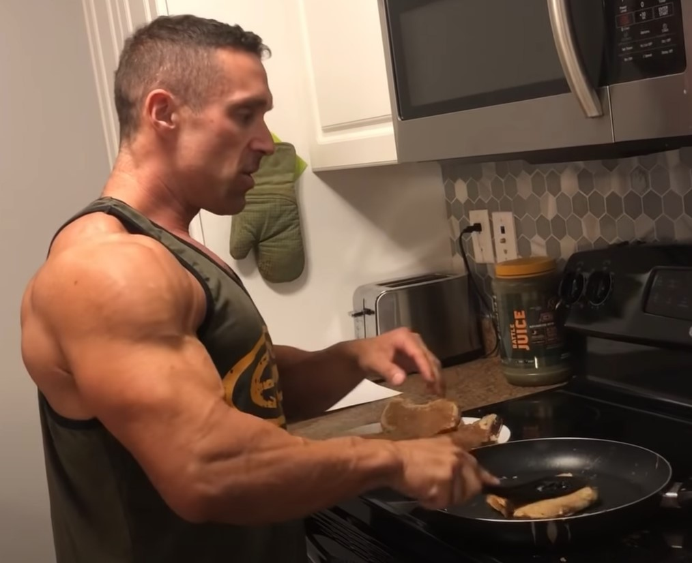

Description
Made internet famous by Greg Doucette. This delicious breakfast is low in calories and filling.
Ingredients
- 1 cup egg whites
- 4 slices of any bread
- 1 packet of sweetner
- 1 tsp cinnamon
- 1 tbsp vanilla extract
Steps
- In a bowl, mix all ingredients except bread.
- Heat a griddle.
- Dip bread in the egg white mixture.
- Cook both sides.
- Remove from griddle. Top with low calorie toppings like fruit and non-fat greek yogurt. Enjoy!